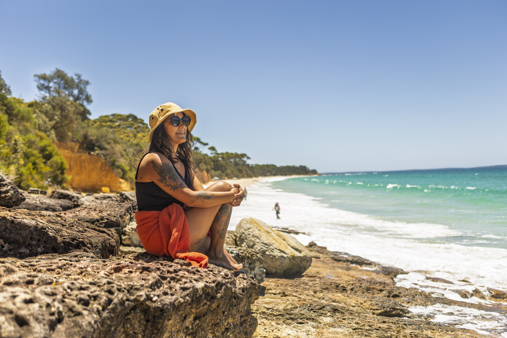
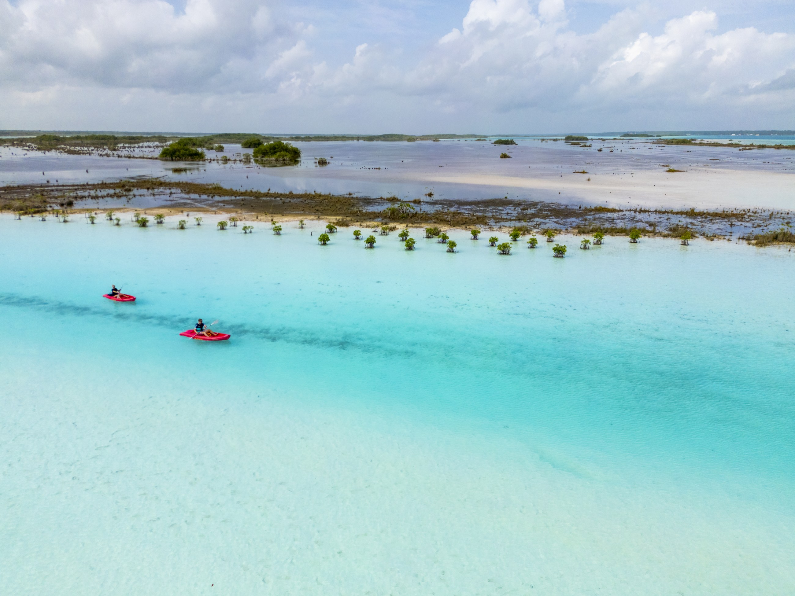
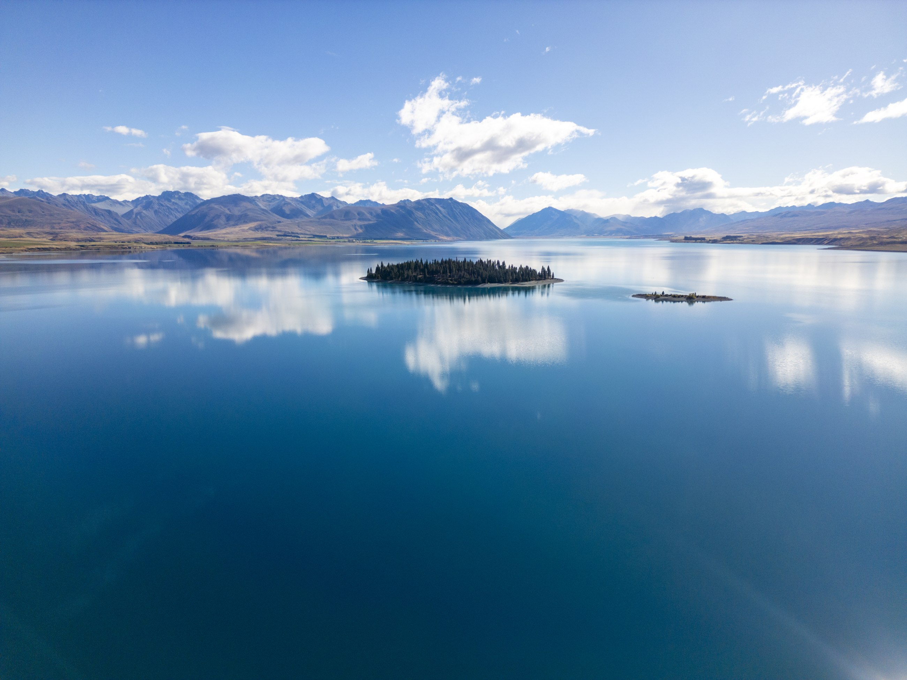
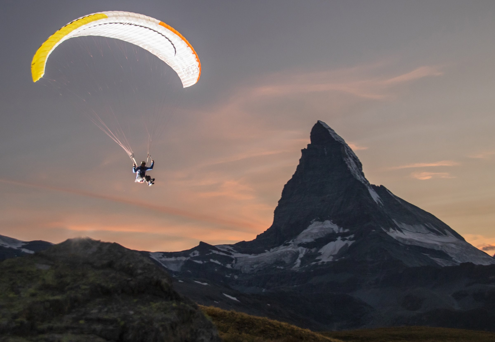
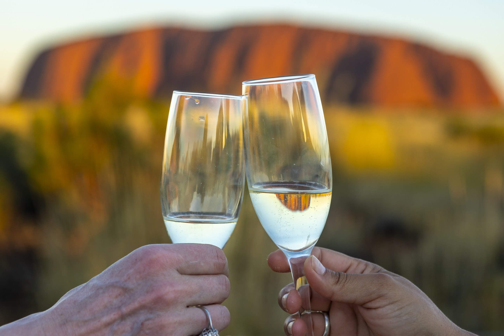

Detrás de cada viaje,
hay una historia.
Imágenes para acercar vuestra marca a las agencias de viajes y a los viajeros que confían en ellas.
DESCUBRIR LA PROPUESTAVuestro trabajo acompaña
mucho más que un viaje.
Bujaldon trabaja junto a agencias de viajes, con asesoramiento y apoyo durante todo el proceso.
Propongo crear contenido nuevo que haga visible esa relación de confianza: desde las personas que organizan cada viaje hasta las experiencias que esperan en destino.
Fotografía y vídeo para que vuestro equipo los use en su comunicación o para desarrollar juntos una campaña completa.

El viaje empieza
mucho antes.
Una serie visual que conecte a las agencias con los momentos que sus clientes esperan vivir. Destinos, personas y experiencias, junto a la cercanía del equipo que los acompaña.
EXPLORAR LA PROPUESTAUna propuesta.
Distintas formas de contarla.
Ideas iniciales para adaptar con vuestro equipo a las necesidades de Bujaldon y de sus agencias colaboradoras.
Historias para agencias +
Fotografiar y filmar a profesionales del viaje: su trato cercano, el trabajo de preparación y el valor de contar con apoyo especializado. Piezas para vuestra web, presentaciones y comunicación profesional.
Experiencias para inspirar +
Crear imágenes originales de destinos y distintas formas de viajar para dar contexto a vuestras campañas y materiales dirigidos a agencias. La selección se ajustaría a los mercados y públicos prioritarios.
Un equipo detrás del viaje +
Mostrar a las personas de Bujaldon y su manera de trabajar con las agencias: retratos, escenas de trabajo y entrevistas, si el equipo quiere participar.
Una campaña adaptada +
Podemos producir fotografía y vídeo para que vuestra agencia los incorpore a sus acciones, o desarrollar juntos el concepto y las piezas de una campaña según vuestro briefing.



Contenido hecho
para vuestro equipo.
Producción visual
Imágenes originales para renovar el material que utilizáis en web, presentaciones comerciales y comunicación con agencias.
Campaña completa
Desarrollo creativo y producción junto a vuestro equipo, con colaboradores locales cuando el proyecto lo requiera.
Alcance, localizaciones y licencia de uso a acordar según el proyecto. Juan conserva la autoría y la propiedad del material.

Conocer el viaje
desde dentro.
Soy Juan Aizpuru, fotógrafo y realizador con base en Bilbao. He vivido diez años en Suiza y trabajo con un equipo profesional en proyectos de viajes, naturaleza y deporte.
Las imágenes de esta página son de mi archivo y muestran mi estilo. La producción para Bujaldon se definiría con vuestro equipo.
VER MI TRABAJO¿Hablamos de lo que
podemos crear juntos?
Me gustaría conocer vuestras prioridades y presentaros ideas para vuestra comunicación con agencias.
HABLEMOS DEL PROYECTO